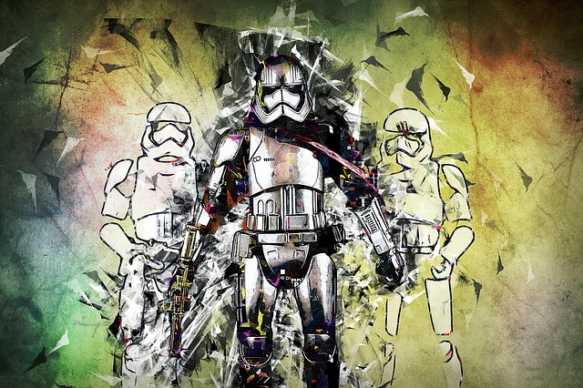

Gambling and Gaming
Gamings most popular Scandals
EA and Star Wars Battlefront
For as long as Micro-transactions have existed in games, it feels like companies such as EA and others like Blizzard and Ubisoft have been major proponents of this system. Unlike blizzard and ubisoft however, EA has come under massive heat from the gaming community as a whole in the past 2 years. The cause of all the anger comes from the release of Star Wars Battlefront 2, the 2017 sequel to their most recent installment in the Star Wars Battlefront series. Due to recent backlash towards micro-transactions in general, this game had unfortunately released at the hight of the backlash, and players were not happy with what the game presented. The game used two main forms of currency, credits and crystals. crystals could only be bought with real money, while credits were earned through gameplay. using loot boxes that were also buyable with real money, players could earn rare boosts for characters along with random an assortment of credits. In order to unlock some of the most rare characters, such as Luke Skywalker, they players would have to spend 60,000 credits. credits to unlock him. Users on reddit were able to deterine this would take over 48 hours of total gameplay to unlock this character.
Understandably outraged, players complained about how those who would spend the money on the game would recieve incrdibly unfair advantages over players who would not. They also voiced their opinions on the ridiculous amounts of time they would need to dedicate to the game to unlock certain characters, and demanded that EA respond and fix the issues. In a now infamous response to fan complaints on Reddit, an EA representative basically disregarded the fans and told them how the intent is to provie players with a sense of pride and accomplishment. To this day, it remains the most downvoted comment in Reddit history. Eventually steps would be taken to try to appease fans, but it was too little too late, and the damage had been done. Today, the game lacks a concurrent player base, and the backlash EA faced over it still looms over their current projects.
TheYoutube CS:GO Fiasco
In the past few years the game known as Counter Strike: Global Offensive, or CS:GO for short, has faced more than its fair share of controversy. The game, known for it's high stake and fast paced First Person Shooter combat, is also well known for it's trading community. Within the game there are loot boxes that players can earn after matches. However, these loot boxes require "keys" to open them, which as you might expect, cost real money. players can also use means such as the Steam Market to buy and sell custom weapon decals, called "skins" that they earn from these loot boxes. The controversy begins when two famous Youtbue personalities, Thomas "Syndicate" Cassell and Trevor "TmarTn" Martin attempted to promote a website using their platform called CSGOLoto.com. On the website, players could connect their accounts from the game and begin gambling their skins for a chance at reiceving a more rare skin which a nother player has gambled.
As one can guess, this proved problematic when people began to realize that children were essentially using this platform to gamble as well, since they were playing the game. In many countries it is considered illegal to for children to gamble, and the website recieved harsh criticism in this regard. The real controversy came after it was revealed that both Thomas and Trevor were actaully both the owners of the site, and had been promoting the site without informing fans or publicly stating it any of their promotional videos. Obvisouly, this practice is quite illegal, and after their ownership became known, the two were placed under investigation by the US Federal Trade Commision. After investigating, the FTC decided not to fine the two youtubers, but insisted that they must disclose all information from then on, and any subsequent infractions would cost them major fines in the tens of thousands of dollars. Not only would it go on to affect their careers, but it also brought even more attention to how easily children are exposed to gambling via modern gaming.